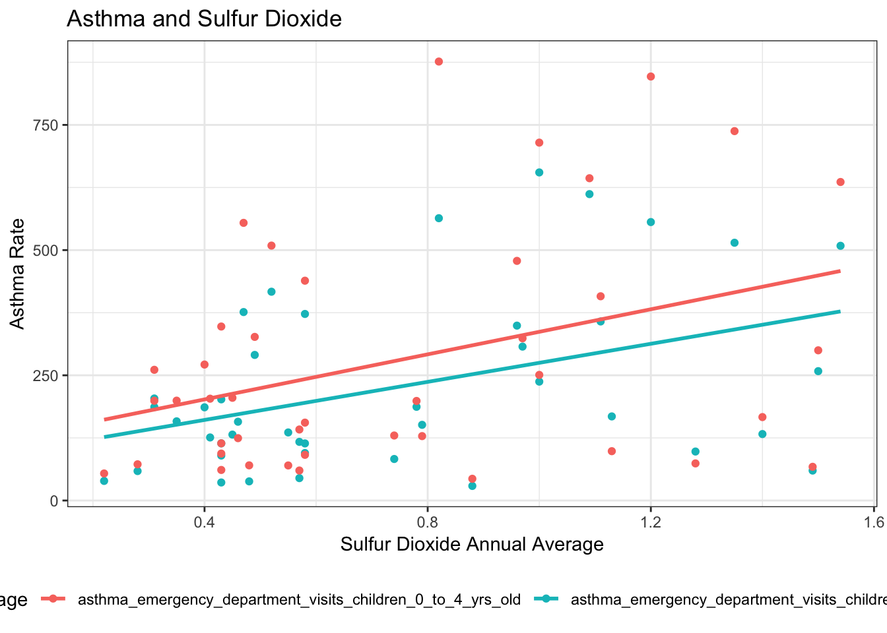
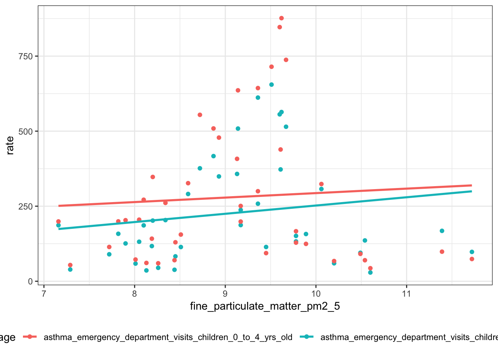
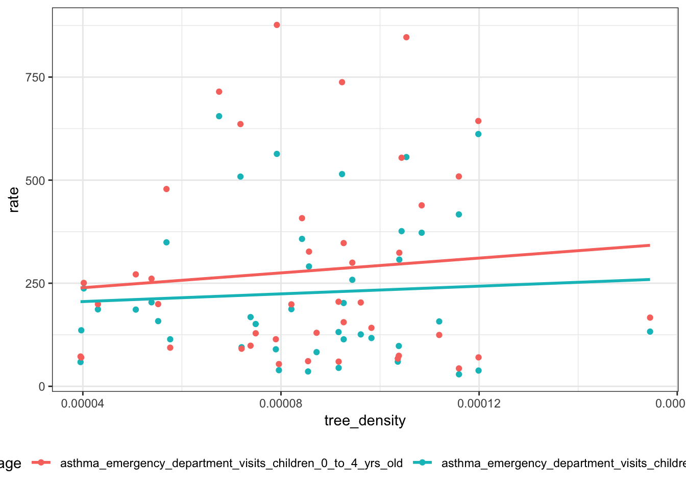
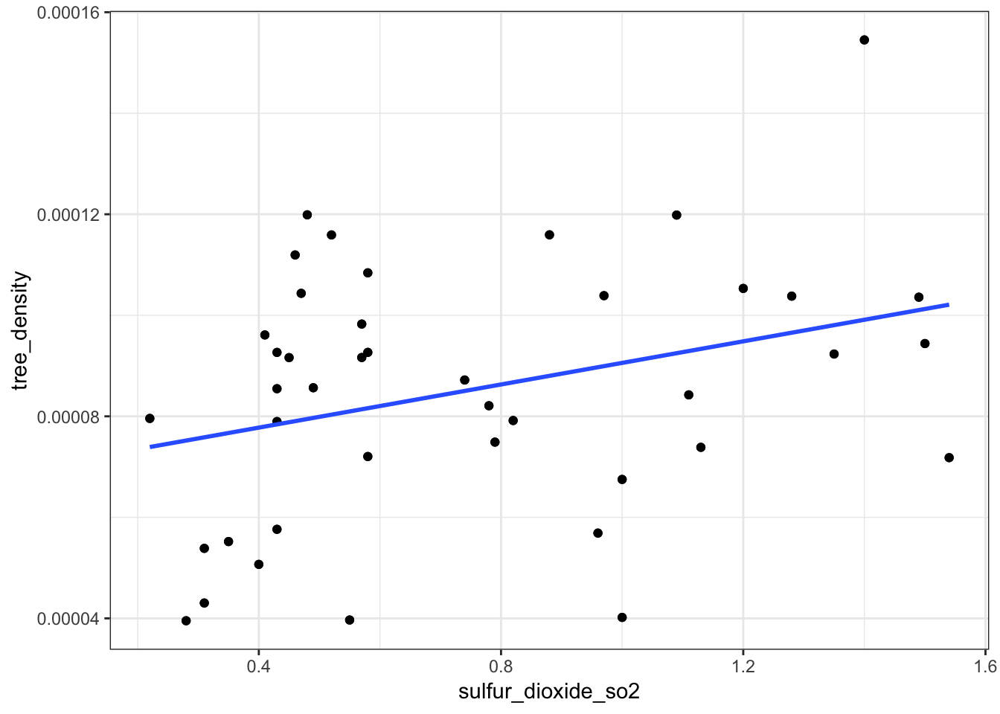
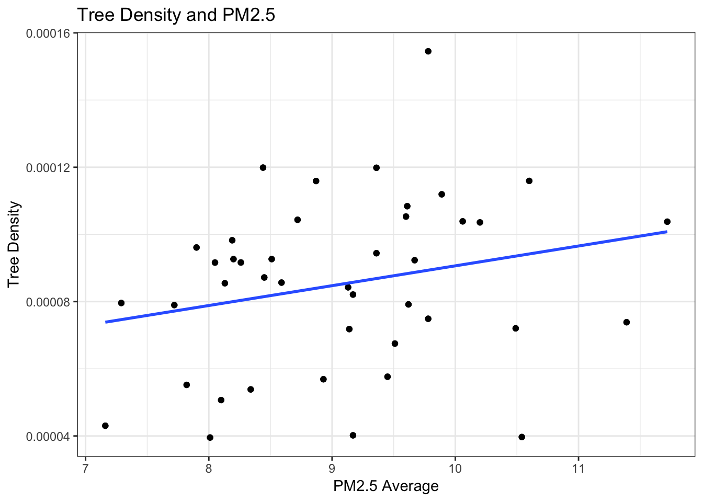

tree and asthma
Baoyi Shi
2018年12月4日
library(tidyverse)
library(dplyr)
=======
library(tidyverse)
## -- Attaching packages ----------------------------------------- tidyverse 1.2.1 --
## v ggplot2 3.0.0 v purrr 0.2.5
## v tibble 1.4.2 v dplyr 0.7.8
## v tidyr 0.8.1 v stringr 1.3.1
## v readr 1.1.1 v forcats 0.3.0
## -- Conflicts -------------------------------------------- tidyverse_conflicts() --
## x dplyr::filter() masks stats::filter()
## x dplyr::lag() masks stats::lag()
library(dplyr)
>>>>>>> 6649264d36b56d14a2b43e874f90ad9f4a575abf
library(readr)
library(ggplot2)
library(readxl)
library(rvest)
library(httr)
tree_df = GET("https://data.cityofnewyork.us/api/views/5rq2-4hqu/rows.csv?accessType=DOWNLOAD") %>%
content("parsed")
## Parsed with column specification:
## cols(
## .default = col_character(),
## tree_id = col_integer(),
## block_id = col_integer(),
## tree_dbh = col_integer(),
## stump_diam = col_integer(),
## zipcode = col_integer(),
## cb_num = col_integer(),
## borocode = col_integer(),
## cncldist = col_integer(),
## st_assem = col_integer(),
## st_senate = col_integer(),
## boro_ct = col_integer(),
## Latitude = col_double(),
## longitude = col_double(),
## x_sp = col_double(),
## y_sp = col_double()
## )
## See spec(...) for full column specifications.
tree_df = tree_df %>%
janitor::clean_names() %>%
filter(status == "Alive") %>%
select(zipcode, latitude, longitude)
download.file("https://raw.githubusercontent.com/BS1125/project_data/master/Zipcode_UHF42.xlsx",mode = "wb",destfile = "Zipcode_UHF42.xlsx")
zipcode_uhf42 = read_excel("Zipcode_UHF42.xlsx") %>%
gather(key = zipcode_no, value = zipcode, zipcode1:zipcode9) %>%
select(-zipcode_no, uhf42_name) %>%
filter(is.na(zipcode) == FALSE)
tree_df = left_join(tree_df, zipcode_uhf42, by = "zipcode")
download.file("https://catharob.carto.com/api/v2/sql?filename=uhf_42_dohmh_2009&q=SELECT+*+FROM+(select+*+from+public.uhf_42_dohmh_2009)+as+subq+&format=csv&bounds=&api_key=&skipfields=the_geom_webmercator",destfile = "UHF_42.csv")
area = read_csv("UHF_42.csv") %>%
filter(uhfcode != 0) %>%
select(uhf42_code = uhfcode, area = shape_area)
## Parsed with column specification:
## cols(
## the_geom = col_character(),
## cartodb_id = col_integer(),
## objectid = col_integer(),
## uhfcode = col_integer(),
## shape_leng = col_double(),
## shape_area = col_double(),
## uhf_neigh = col_character(),
## borough = col_character()
## )
tree_df = left_join(tree_df, area, by = "uhf42_code")
#tree density
tree_density = tree_df %>%
group_by(uhf42_name, uhf42_code, area) %>%
dplyr::summarize(tree_total = n()) %>%
filter(is.na(uhf42_name) == FALSE) %>%
group_by(uhf42_name) %>%
dplyr::mutate(tree_density = tree_total/area) %>%
ungroup() %>%
mutate(uhf42_name = forcats::fct_reorder(uhf42_name, tree_density))
#read and tidy data
download.file("https://raw.githubusercontent.com/BS1125/project_data/master/asthma_pollutes_poverty.csv",mode = "wb",destfile = "asthma_air_poverty.csv")
asthma_air_poverty = read_csv("asthma_air_poverty.csv") %>%
select(geo_entity_id, geo_entity_name, name, data_value) %>%
filter(is.na(geo_entity_id) == FALSE) %>%
spread(key = name, value = data_value) %>%
janitor::clean_names() %>%
select(poverty, children_under_5_years_old_in_poverty, everything()) %>%
mutate(asthma_total = asthma_emergency_department_visits_children_0_to_4_yrs_old + asthma_emergency_department_visits_children_5_to_14_yrs_old,
geo_entity_name = forcats::fct_reorder(geo_entity_name, asthma_total))
## Parsed with column specification:
## cols(
## `Unique Id` = col_character(),
## indicator_id = col_integer(),
## geo_type_id = col_integer(),
## measurement_type_id = col_integer(),
## internal_id = col_integer(),
## subtopic_id = col_integer(),
## name = col_character(),
## Measure = col_character(),
## geo_type_name = col_character(),
## description = col_character(),
## geo_entity_id = col_integer(),
## geo_entity_name = col_character(),
## year_description = col_character(),
## data_value = col_double(),
## message = col_character()
## )
tree_density_total = tree_density %>%
select(geo_entity_id=uhf42_code, tree_density) %>%
distinct()
final_df = left_join(asthma_air_poverty, tree_density_total)
## Joining, by = "geo_entity_id"
#SLR:choose the pollutes associated with asthma
o3_p1 = summary(lm(asthma_emergency_department_visits_children_0_to_4_yrs_old~ozone_o3, data=final_df))$coefficients[2,4]
o3_p2 = summary(lm(asthma_emergency_department_visits_children_5_to_14_yrs_old~ozone_o3, data=final_df))$coefficients[2,4]
black_carbon_p1 = summary(lm(asthma_emergency_department_visits_children_0_to_4_yrs_old~black_carbon, data=final_df))$coefficients[2,4]
black_carbon_p2 = summary(lm(asthma_emergency_department_visits_children_5_to_14_yrs_old~black_carbon, data=final_df))$coefficients[2,4]
pm2_5_p1 = summary(lm(asthma_emergency_department_visits_children_0_to_4_yrs_old~fine_particulate_matter_pm2_5, data=final_df))$coefficients[2,4]
pm2_5_p2 = summary(lm(asthma_emergency_department_visits_children_5_to_14_yrs_old~fine_particulate_matter_pm2_5, data=final_df))$coefficients[2,4]
no_p1 = summary(lm(asthma_emergency_department_visits_children_0_to_4_yrs_old~nitric_oxide_no, data=final_df))$coefficients[2,4]
no_p2 = summary(lm(asthma_emergency_department_visits_children_5_to_14_yrs_old~nitric_oxide_no, data=final_df))$coefficients[2,4]
no2_p1 = summary(lm(asthma_emergency_department_visits_children_0_to_4_yrs_old~nitrogen_dioxide_no2, data=final_df))$coefficients[2,4]
no2_p2 = summary(lm(asthma_emergency_department_visits_children_5_to_14_yrs_old~nitrogen_dioxide_no2, data=final_df))$coefficients[2,4]
so2_p1 = summary(lm(asthma_emergency_department_visits_children_0_to_4_yrs_old~sulfur_dioxide_so2, data=final_df))$coefficients[2,4]
so2_p2 = summary(lm(asthma_emergency_department_visits_children_5_to_14_yrs_old~sulfur_dioxide_so2, data=final_df))$coefficients[2,4]
data.frame(Pollute = c("Ozone", "Black Carbon", "PM2.5", "NO", "NO2", "SO2"),
P_value1 = c(o3_p1, black_carbon_p1, pm2_5_p1, no_p1, no2_p1, so2_p1),
P_value2 = c(o3_p2, black_carbon_p2, pm2_5_p2, no_p2, no2_p2, so2_p2)) %>%
knitr::kable(digits = 3)
Pollute
P_value1
P_value2
Ozone
0.828
0.380
Black Carbon
0.551
0.242
PM2.5
0.676
0.298
NO
0.507
0.868
NO2
0.738
0.347
SO2
0.017
0.006
#based on p values, we choose SO2
#MLR
summary(lm(asthma_emergency_department_visits_children_0_to_4_yrs_old~tree_density+sulfur_dioxide_so2+children_under_5_years_old_in_poverty,data=final_df)) %>%
broom::tidy() %>%
knitr::kable()
term
estimate
std.error
statistic
p.value
(Intercept)
-155.24310
9.011553e+01
-1.7227119
0.0930711
tree_density
163130.32364
9.415070e+05
0.1732651
0.8633627
sulfur_dioxide_so2
189.68311
6.276371e+01
3.0221782
0.0044754
children_under_5_years_old_in_poverty
11.07405
1.489616e+00
7.4341612
0.0000000
summary(lm(asthma_emergency_department_visits_children_5_to_14_yrs_old~tree_density+sulfur_dioxide_so2+poverty,data=final_df)) %>%
broom::tidy() %>%
knitr::kable()
term
estimate
std.error
statistic
p.value
(Intercept)
-88.28305
6.421422e+01
-1.3748207
0.1772400
tree_density
-414020.33134
6.693588e+05
-0.6185327
0.5399144
sulfur_dioxide_so2
122.53171
4.567335e+01
2.6827835
0.0107495
poverty
12.90333
1.683991e+00
7.6623505
0.0000000
final_asthma_df = gather(final_df, key = asthma_age, value = rate, asthma_emergency_department_visits_children_0_to_4_yrs_old:asthma_emergency_department_visits_children_5_to_14_yrs_old) %>%
gather(key = poverty_age, value = poverty, poverty:children_under_5_years_old_in_poverty) %>%
filter((asthma_age == "asthma_emergency_department_visits_children_5_to_14_yrs_old"&poverty_age == "poverty")|(asthma_age == "asthma_emergency_department_visits_children_0_to_4_yrs_old"& poverty_age == "children_under_5_years_old_in_poverty"))
#asthma and so2
ggplot(final_asthma_df) +
geom_point(aes(x = sulfur_dioxide_so2, y = rate, color = asthma_age))+
geom_smooth(aes(x = sulfur_dioxide_so2, y = rate, color = asthma_age), method = "lm", se = F) +
labs(
title = "Asthma and Sulfur Dioxide",
x = "Sulfur Dioxide Annual Average",
y = "Asthma Rate"
) +
theme(legend.position = "bottom")

#asthma and pm2.5
ggplot(final_asthma_df) +
geom_point(aes(x = fine_particulate_matter_pm2_5, y = rate, color = asthma_age))+
geom_smooth(aes(x = fine_particulate_matter_pm2_5, y = rate, color = asthma_age), method = "lm", se = F) +
theme(legend.position = "bottom")

#asthma and poverty
ggplot(final_asthma_df) +
geom_point(aes(x = poverty, y = rate, color = asthma_age))+
geom_smooth(aes(x = poverty, y = rate, color = asthma_age), method = "lm", se = F) +
theme(legend.position = "bottom")
#asthma and tree
ggplot(final_asthma_df) +
geom_point(aes(x = tree_density, y = rate, color = asthma_age)) +
geom_smooth(aes(x = tree_density, y = rate, color = asthma_age), method = "lm",se = F) +
theme(legend.position = "bottom")

#tree and SO2
ggplot(final_asthma_df) +
geom_point(aes(x = sulfur_dioxide_so2, y = tree_density)) +
geom_smooth(aes(x = sulfur_dioxide_so2, y = tree_density), method = "lm", se = F)

#tree and pm2.5
ggplot(final_asthma_df) +
geom_point(aes(x = fine_particulate_matter_pm2_5, y = tree_density)) +
geom_smooth(aes(x = fine_particulate_matter_pm2_5, y = tree_density), method = "lm", se = F) +
labs(
title = "Tree Density and PM2.5",
x = "PM2.5 Average",
y = "Tree Density"
)

#asthma 0-4 and asthma 5-14 in each UHF42
ggplot(final_asthma_df) +
geom_bar(aes(x = geo_entity_name, y = rate, fill = asthma_age), stat = "identity", position = "dodge") +
labs(
title = "Asthma Rate In Each Entity",
x = "Entity Name",
y = "Asthma Rate"
) +
theme(legend.position = "bottom", axis.text.x = element_text(angle = 75, hjust = 1)) +
guides(fill = guide_legend(nrow = 2)) +
scale_fill_hue(name = "Age")

#Paired T test to test if there is significant difference between asthma rate of 0-4 and that of 5-14
t.test(final_df$asthma_emergency_department_visits_children_0_to_4_yrs_old, final_df$asthma_emergency_department_visits_children_5_to_14_yrs_old, paired=T) %>%
broom::tidy() %>%
knitr::kable()
estimate
statistic
p.value
parameter
conf.low
conf.high
method
alternative
53.06667
4.257839
0.0001173
41
27.89655
78.23679
Paired t-test
two.sided